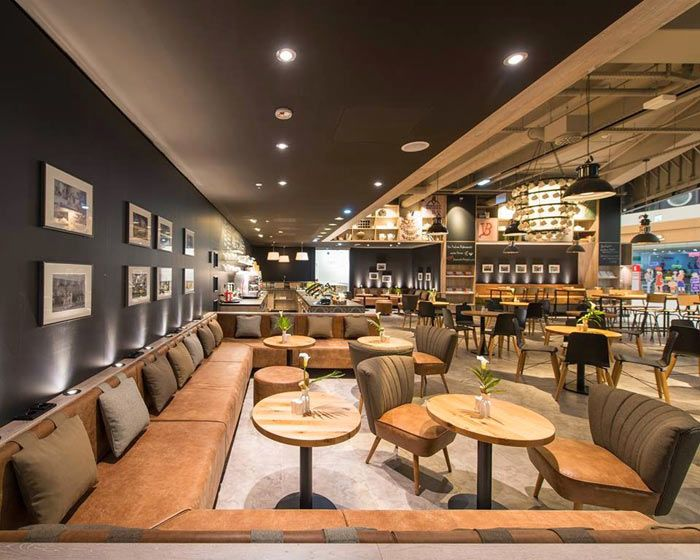
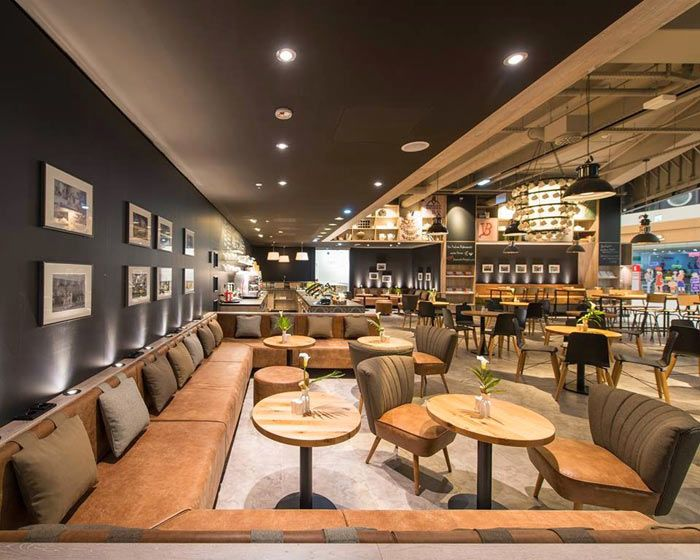

En Caffe & Co., cada taza representa nuestra dedicación a la excelencia. Fundada en 1987 en Quebec, somos más que una cafetería; somos un espacio donde el café se convierte en una experiencia inolvidable.
Nuestra misión es sencilla: honrar el arte del café artesanal. Por eso, trabajamos directamente con productores locales que comparten nuestra pasión por la calidad y la sostenibilidad, seleccionando los mejores granos para tostarlos con precisión y cuidado.
 

Caffe & Co. es un refugio para quienes valoran el sabor, la tradición y la calidez de un buen café. Desde métodos tradicionales hasta especialidades innovadoras, aquí encontrarás opciones para todos los paladares. Además, hemos creado un ambiente acogedor donde puedes relajarte, conectar con otros y disfrutar de momentos únicos.